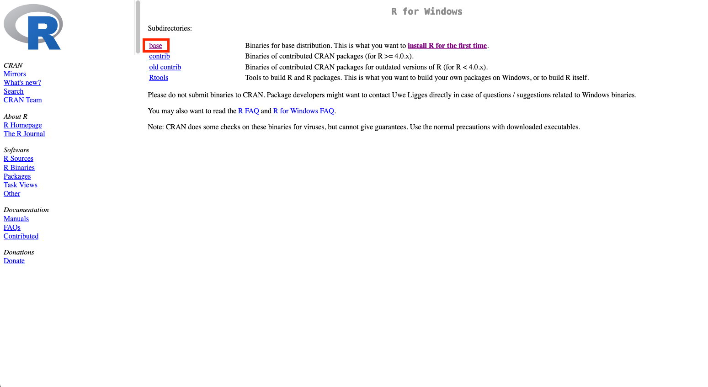
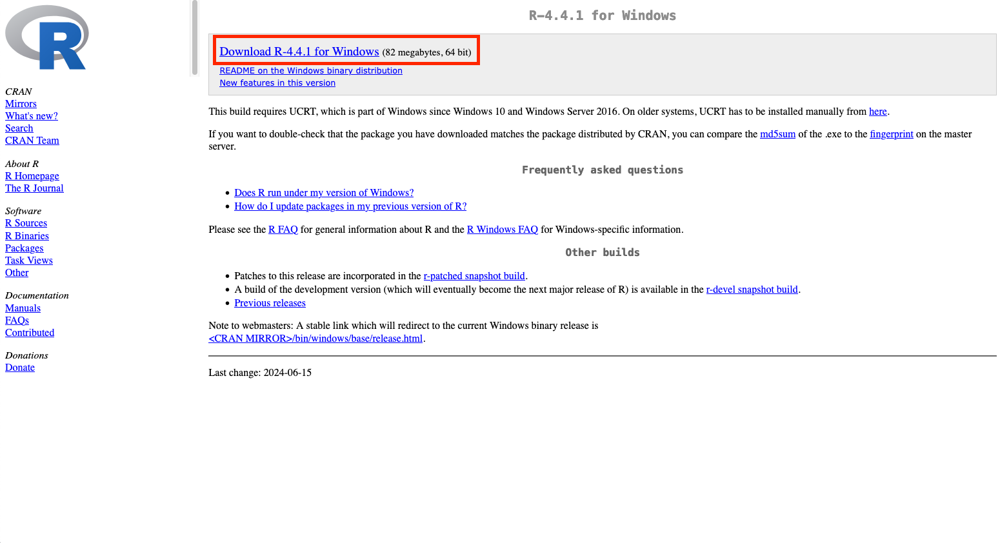
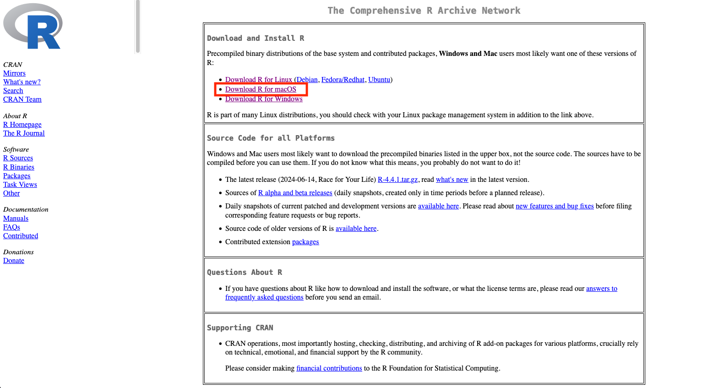
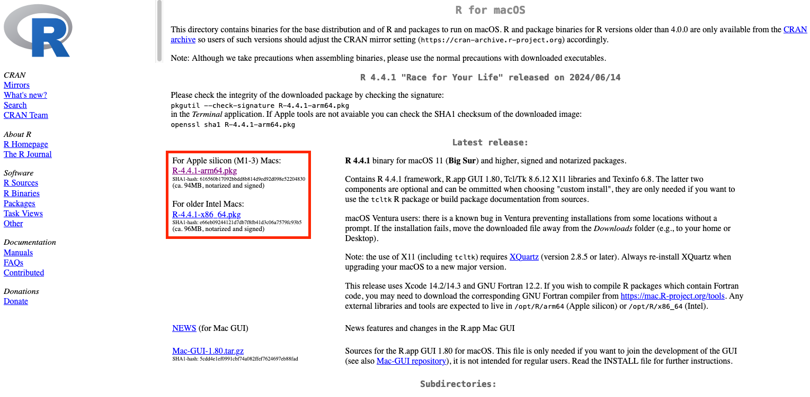
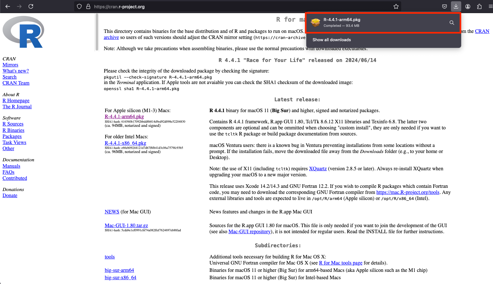
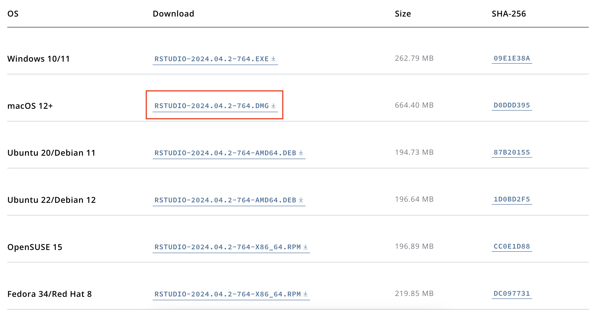

R and RStudio
R is a free and open-source programming language designed for statistical computing, data analysis, and graphics. RStudio is an integrated development environment (IDE) for R, designed to make coding and data analysis more efficient and user-friendly.
To understand the benefits of using R with RStudio, let’s draw on an analogy from the Modern Dive book.
At its simplest, R is like a car’s engine while RStudio is like a car’s dashboard.

The engine (R) is what runs all of your analysis, while the dashboard (RStudio) provides an interface to efficiently control and navigate it.
Installation
Select your operating system for detailed instructions on installing R and RStudio.
Windows

macOS

Linux

Installing R
The R programming language is available through the Comprehensive R Archive Network (CRAN) website.
Select your operating system above for more detailed instructions.
Windows
Download the R installer:
Open your web browser and go to the R Project website.
Under the “Download and Install R” section, click on the “Download R for Windows” link.

- On the next page, click on “base” to download the base distribution of R.

- Click on the “Download R x.x.x for Windows” link (the version number will vary).

- Save the
.exefile to your computer (the download should begin automatically).
Install R:
- Once the
.exefile has been downloaded, open the executable file.

- Allow the installer to change your device.

- The R Setup Wizard will appear. Click Next.
- Accept the license agreement by selecting I Agree.
- Choose the installation path. The default is usually fine (e.g.,
C:\Program Files\R\R-x.x.x), but you can choose a different directory if you prefer. Click Next. - Select components for installation. The default components (which include everything you need) should be fine, so click Next.
- Choose the start menu folder for the R shortcut, or leave it as the default and click Next.
- Select whether you want to associate R with
.R,.Rdata, and.rdsfiles. You can accept the default option and click Next. - Choose whether to create a desktop shortcut for R. If you want it, leave the box checked and click Next.
- Click Install to begin the installation.
- Once the installation is complete, click Finish to exit the setup wizard.
Rtools is a collection of software tools necessary for building R packages on Windows. If you are creating R packages, or installing R packages from sources it is useful to have Rtools installed.
Rtools includes compilers and other utilities which help install packages from sources which contain C, C++, or Fortran code.
Download Rtools:
- Open your browser and go to the Rtools page: Rtools for Windows.
- Find the version of Rtools that matches your version of R (e.g., Rtools43 is compatible with R 4.3.x).
- Click on the download link for the appropriate Rtools version (e.g.,
Rtools43.exefor R 4.3.x).
Install Rtools:
- After downloading the installer, double-click on the
.exefile to start the installation process. - In the Setup Wizard, select Next.
- Accept the license agreement and click Next.
- Choose the installation path (the default should be fine), then click Next.
- Select the components to install. The default components should suffice for most users, so click Next.
- Choose whether to add Rtools to your system’s PATH variable. It is highly recommended to leave this option checked, as it will make Rtools available from the command line. Click Next.
- Click Install to begin the installation process.
- Once installation is complete, click Finish.
MacOS
Download the R installer:
- Open your web browser and go to the R Project website.
- Under the “Download and Install R” section, click Download R for macOS.

- On the next page, click the “R-4.x.x.pkg” link (where “x.x” will be the version number) to download the R installer for macOS. This will download a
.pkgfile.

Install R:
- After downloading the
.pkgfile, open it to start the installation process.

- Follow the on-screen instructions in the installation wizard:
- Click Continue.
- Read and agree to the software license.
- Click Install to start the installation.
- If prompted, enter your macOS administrator password to authorize the installation.

- Once the installation is complete, click Close to exit the installer.
On macOS, you may need to install Xcode Command Line Tools to compile R packages that require compiled code (such as C, C++, or Fortran). If you are creating R packages, or installing R packages from sources it is useful to have Xcode installed.
Rtools includes compilers and other utilities which help install packages from sources which contain C, C++, or Fortran code.
Install Xcode Command Line Tools:
Open the Terminal application (you can find it via Spotlight search).
Run the following command to install Xcode Command Line Tools:
xcode-select --installA pop-up will appear prompting you to install the tools. Click Install to proceed.
Linux
Below are instructions for installing R on Ubuntu / Debian systems. For other linux distributions, please refer to these R installation instructions: https://docs.posit.co/resources/install-r.html
Open a new Terminal window.
Run the following command to ensure your package list is up-to-date:
sudo apt updateInstall the necessary software properties package:
sudo apt install -y software-properties-commonAdd the CRAN repository to your list of package sources:
sudo add-apt-repository "deb https://cloud.r-project.org/bin/linux/ubuntu $(lsb_release -c | awk '{print $2}')/"Import the CRAN GPG key for package verification:
sudo apt-key adv --keyserver keyserver.ubuntu.com --recv-keys E084DAB9Update your package list again:
sudo apt updateInstall R:
sudo apt install -y r-base
The r-base-dev package contains development tools and libraries needed to compile R packages from source. It is particularly important when you want to install R packages that require compiling native code (such as C, C++, or Fortran).
To install r-base-dev (after installing r-base):
Open a Terminal window.
Run the following command to install
r-base-dev:sudo apt install -y r-base-dev
Installing RStudio
The RStudio can be downloaded from the Posit website. Scroll down to All Installers and Tarballs and download the RStudio version for your operating system.
Select your operating system above for more detailed instructions.
Windows
Download the RStudio Installer:
- Open your web browser and go to the RStudio website.
- Under the “RStudio Desktop” section, click on the Download RStudio button.
- You will be directed to a page where you can select the version of RStudio for your operating system. Select RStudio for Windows.
- Click on the Download RStudio Desktop button to download the installer for Windows. It will download a
.exefile.

Install RStudio:
- After downloading the
.exefile, open the executable file.

- Allow the installer to make changes on your computer.

- The RStudio Setup Wizard will open. Click Next to continue.
- Accept the license agreement by selecting I Agree.
- Choose the installation directory. The default installation path (e.g.,
C:\Program Files\RStudio) should be fine, but you can change it if needed. Click Next. - Select whether you want to create a desktop shortcut for RStudio. If you want one, leave the box checked and click Next.
- Click Install to begin the installation.
- Once installation is complete, click Finish to exit the setup wizard.
Launch RStudio:
After the installation, you can launch RStudio either by using the desktop shortcut (if you created one) or by searching for “RStudio” in the Windows Start menu.
MacOS
Download the RStudio installer:
- Open your web browser and go to the RStudio website.
- Scroll down to the “RStudio Desktop” section and click Download RStudio.
- On the next page, under RStudio Desktop for macOS, click Download RStudio Desktop (this will download the
.dmgfile).

Install RStudio:
- After the
.dmgfile has downloaded, locate the file and double-click it to open the disk image. - A new window will appear showing the RStudio application icon. Drag the RStudio icon into your Applications folder.

- Once the application is copied to the Applications folder, you can close the disk image window.
Launch RStudio:
After the installation, you can launch RStudio either by double-clicking the RStudio app in the Applications folder or by searching for “RStudio” in the application launcher.
Linux
Download the RStudio installer:
- Open your web browser and go to the RStudio Download page.
- Scroll down to the “RStudio Desktop” section and click Download RStudio.
- On the next page, choose the .deb package for Ubuntu/Debian and download it to your system.
Install RStudio:
Once the
.debfile has been downloaded, open it with your application manager.Click the manager’s install button, and enter your system password if necessary.
Launch RStudio:
After the installation, you can launch RStudio either from your application menu or by running rstudio from your Terminal.